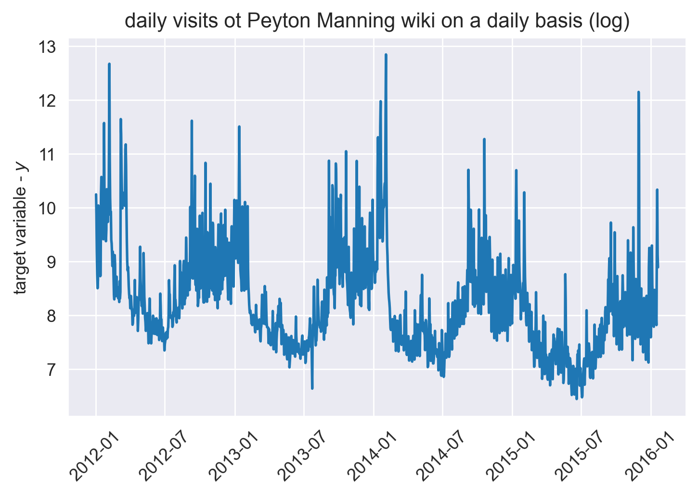

In this article we will look at linear regression, and how dummies can be used to extend its capabilities
1 TLDR;
Linear regression on itself is not performant for longer time-scales
Most systems have some capabilities for linear regression built-in
Adding dummy variables for datetime features(i.e. months, weekday etc.) adds predictive power
2 Introduction
Linear regrerssion is a statistical model that can be used to determine the linear relationship between variables, most of the time this is seen as a beginners model that is not particularly useful, and most of the time it is discarded and replaced by a shiny neural net or a fancy gradient-boosted model.
the nice feature of linear regression is that the direction and magnitude of the relationship can be estimated with the help of linear regression. It is used in many fields including but not limited to Economics, Finance, Social science, etc. The popularity of this model is model is likely due to the fact that most systems have built-in functionality that enables the training of linear models, they are also very cheap/fast to train, and one can also determine that the model has optimal parameters. all these features make linear regression an excellent model to start with.
To extend the capabilities of the linear model for time series forecasting, dummy variables can be utilized. These dummies can provide additional information about the relationship over time, can help the model to identify seasonality over time and also gauge the effect of one-off events, examples are price reductions or natural disasters.
For instance we can create a dummy to identify certain datetime features such as what the month is orwhether a particular day is a weekday or a weekend.
3 Imports
First we import all the libraries, the default data science libs and the linear model and metrics from sklearn.
Code
import matplotlib.pyplot as pltimport numpy as npimport pandas as pdimport seaborn as snsfrom sklearn.linear_model import LinearRegressionfrom sklearn.metrics import mean_absolute_error, mean_squared_errorfrom sklearn.pipeline import make_pipelinefrom sklearn.preprocessing import MinMaxScaler, StandardScaler
4 Reading in the data
For this example we will be using a dataset form the prophet package. I have selected this one because in the prophet documentation this dataset is used in the section “Seasonality, Holiday Effects, And Regressors” so it seems fitting to use it, to demonstrate the usefullness of seasonal dummies. The prophet docs describe the dataset in the following way:
As an example, let’s look at a time series of the log daily page views for the Wikipedia page for Peyton Manning. We scraped this data using the Wikipedia trend package in R. Peyton Manning provides a nice example because it illustrates some of Prophet’s features, like multiple seasonality, changing growth rates, and the ability to model special days (such as Manning’s playoff and superbowl appearances).
Code
df_in = pd.read_csv("https://raw.githubusercontent.com/facebook/prophet/main/examples/example_wp_log_peyton_manning.csv")df_in = df_in.assign(ds=pd.to_datetime(df_in["ds"]))df_in = df_in[(df_in["ds"] >"2012")] # selecting data after 2012
lets plot the data over time to see what we visually can extract from the plot.
Code
plt.plot_date( x=df_in["ds"], y=df_in["y"], label="input timeseries", fmt="-",)plt.tick_params(axis="x", rotation=45)plt.ylabel("target variable - $y$")plt.title("daily visits ot Peyton Manning wiki on a daily basis (log)")plt.show()

I have selected data from 2012 onwards, this should be enough to testdrive the seasonal dummies. The first thing that I notice is that there is a dip around month 06 and 07. Most likely the american football (handegg?) season is having its summer break then. Also the same pattern repeats over the years start high then dips and then and high again. so there is some repeating seasonality. Lets continue and train our first models. starting with a simple plain linear regression and then adding in the dummies to see if they improve the performance of the model.
To gauge the performance of the model the data is split in two parts, the train data 2012 onwards up to 2015 and the test data everything after 2015. The model will only see the train data and is asked to create a prediction for the test data, afterwards we will calcualte the perfomance.
# pull coefs into a seperate df, to plot the influence of timelin_reg_coefs = ( pd.DataFrame(data=pipeline["linearregression"].coef_, columns=X_train.columns) .T.reset_index() .rename(columns={"index": "month", 0: "coefficient"}))# exclude the time collin_reg_coefs = lin_reg_coefs[lin_reg_coefs["month"] !="ds_int"]# centering and scalinglin_reg_coefs["coefficient"] = ( lin_reg_coefs["coefficient"] - lin_reg_coefs["coefficient"].mean()) / lin_reg_coefs["coefficient"].mean()